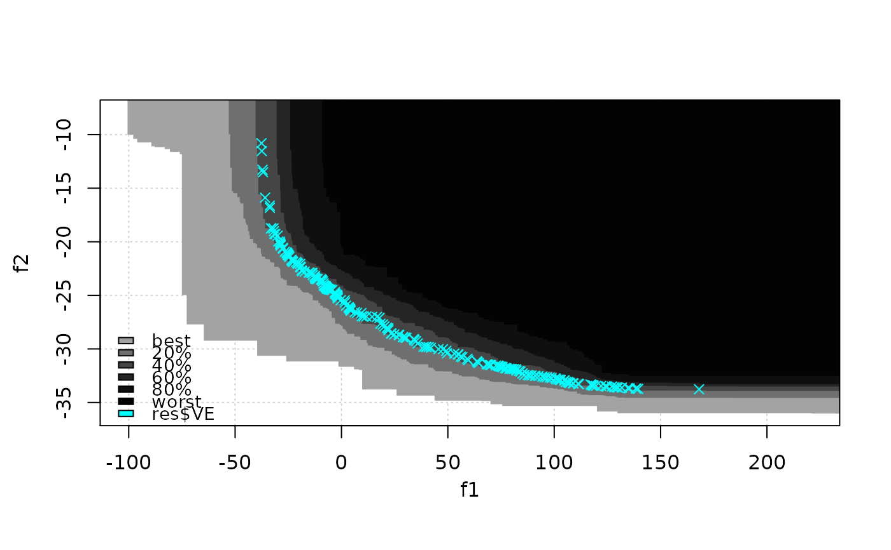

R/eaf-package.R
CPFs.RdThe data has the only goal of providing an example of use of vorobT() and
vorobDev(). It has been obtained by fitting two Gaussian processes on 20
observations of a bi-objective problem, before generating conditional
simulation of both GPs at different locations and extracting non-dominated
values of coupled simulations.
CPFs
A data frame with 2967 observations on the following 3 variables.
f1first objective values.
f2second objective values.
setindices of corresponding conditional Pareto fronts.
M Binois, D Ginsbourger, O Roustant (2015). “Quantifying uncertainty on Pareto fronts with Gaussian process conditional simulations.” European Journal of Operational Research, 243(2), 386--394. doi: 10.1016/j.ejor.2014.07.032 .
data(CPFs) res <- vorobT(CPFs, reference = c(2, 200)) eafplot(CPFs[,1:2], sets = CPFs[,3], percentiles = c(0, 20, 40, 60, 80, 100), col = gray(seq(0.8, 0.1, length.out = 6)^2), type = "area", legend.pos = "bottomleft", extra.points = res$VE, extra.col = "cyan") 